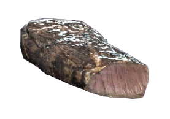

Deathclaw steak

Description:
A traditional Deathclaws steak, simple but powerful dish. You have to have a death wish to even think about making this yourself.
Ingredients:
- Deathclaws tenderloin (Goodluck!)
- Radaway
- Pepper
- Salt
- Mentats (any flavor you want)
- Glowing fungus (Optional, asparagus alternative)
Directions:
- Prepping the meat by soaking them in Radaway for at least 12 hours.
- Cut the meat into pieces of 1.5 - 2 inches thick, add salt and pepper and let it rest for 6 hours
- Boil Mutshoot fungus with Mentats for half an hour
- Grilled the meat for 15 mins with your best flamthrower
- Let the meat cool down for 3-5 mins, then serve with Glowing fungus
ENJOY THE MEAL WITH A NUKA COLA! (Sponsor shout out)